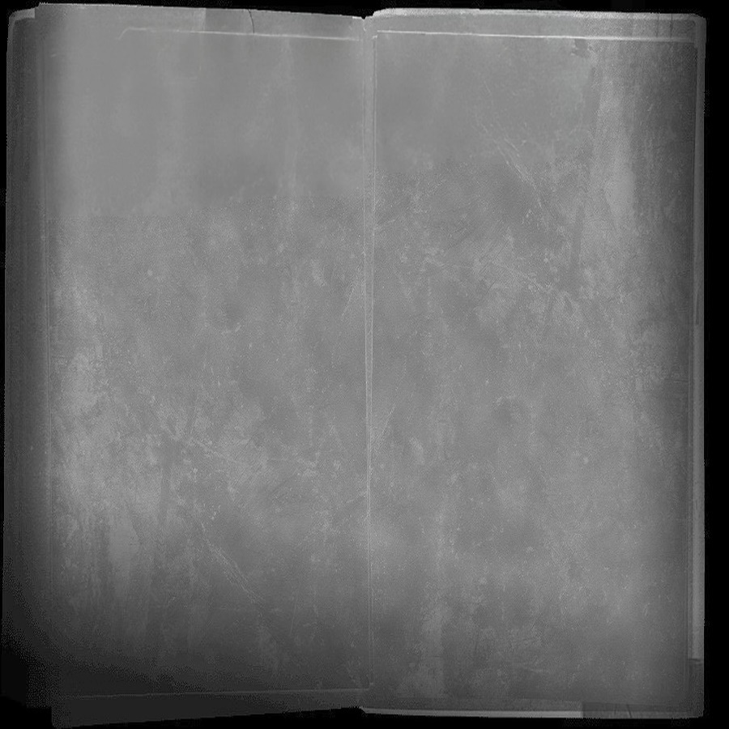

O primeiro projeto de Charlie | Club Benares
Mistério, suspense e terror. Escolhi estes géneros para o meu primeiro trabalho audiovisual porque achei que são temas bastante divertidos de desenvolver. E não é por acaso, porque vou continuar a trabalhar com estes temas "divertidos" durante a minha primeira etapa como realizador da faculdade. Descobri uma paixão pelo cinema e pelo misterioso. (Isso fica evidenciado mais à frente)
Para desenvolver este projeto, inspir-ei-me nos meus filmes preferidos de suspense e terror, em vídeos da internet e nas lendas urbanas que mais gosto. (Se achares que reconheces alguma referência… é só coincidência!)
Penso que o filme seja como um puzzle: todos os elementos estão lá (menos o final), e isso acaba por abrir discussões entre colegas sobre as diferentes versões desses puzzles. E também desejo ter o gosto de deixar alguns mistérios por resolver para sempre (embora alguns professores e colegas já me tenham odiado por isso, haha!)
Fico muito contente com a estética e os planos do filme, porque as escolhas foram espontâneas, nada de storyboards! Foi só alegria, sem limites... Agora, com uma "escola do cinema" na cabeça, parece que custa muito mais escolher o "perfeito", quando antes era tão fácil, alegre e espontâneo, sem essa pressão estética (nm tivesse mt mais haha)! Good Old Times...!
CC.
Runtime: 11m12s
Câmera: Nikon... Não me lembro o modelo
Áudio: Tascam DR60 + Rode NTG2
Software: Adobe Premiere Pro
Local: Estoril + Carcavelos
REALIZAÇÃO + PRODUÇÃO
Charlie Chaves
IMAGEM + SOM EDIÇÃO
João Nobre
Alessandro Barboza:
"Pedro Amaral"
Pedro Cabral:
"Helder Saramago"
Mi Mamalety
Mis amigos Menes & JJ
Helder visita a antiga casa do seu melhor amigo, Pedro, quem desapareceu há um tempo atras sem deixar rastro. O objetivo do Helder é redescobrir memórias esquecidas, mas acabará por descobrir ainda mais.
Abril 2023 | Rodagem
20 Imagens
Fotografias: João Nobre
VisualizarJunho 2023 | Frames
5 Frames
Direccíon: Charlie Chaves
Visualizar